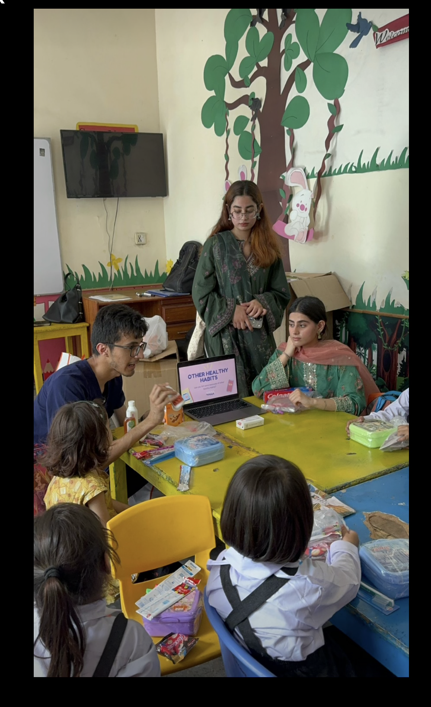

Little Steps Foundation is dedicated to supporting underserved children and families through community outreach, education, health awareness, and essential resource distribution. Through hygiene initiatives, school visits, meal distribution, and collaborative projects, we strive to create meaningful change and empower communities one small step at a time.
Stay updated on our latest initiatives and events or reach out to us for future collaborations.